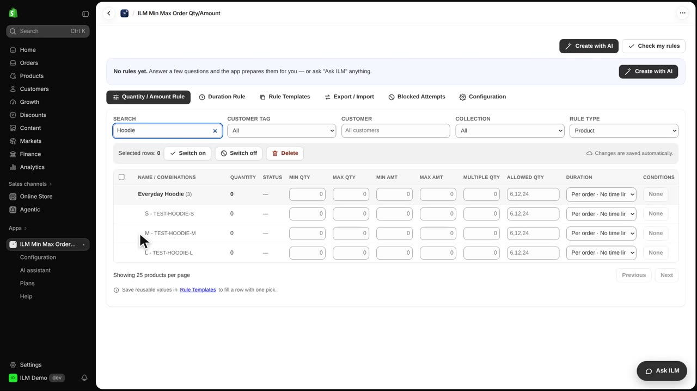
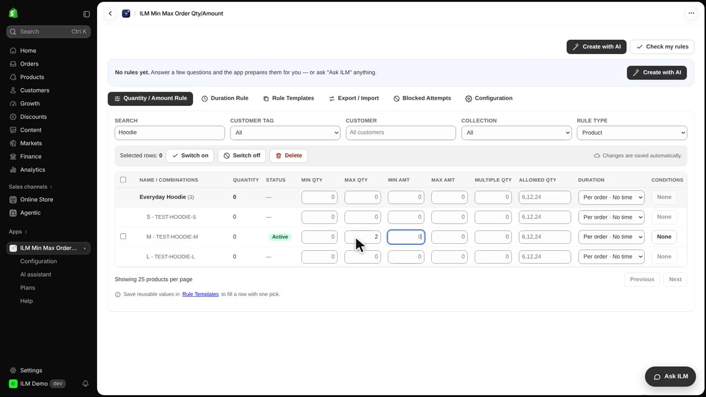
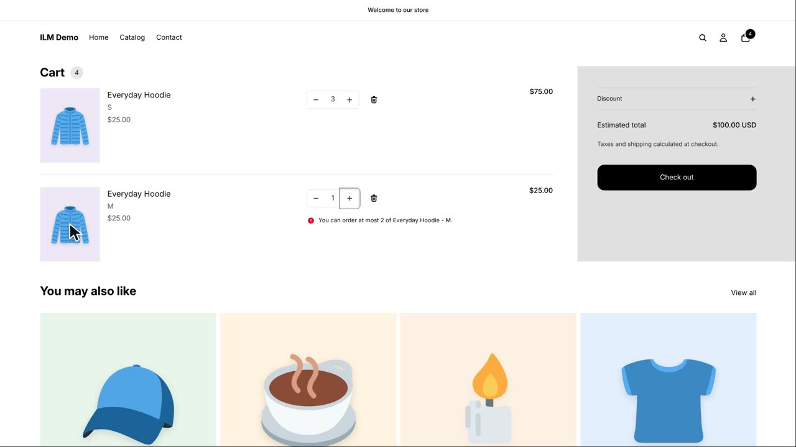
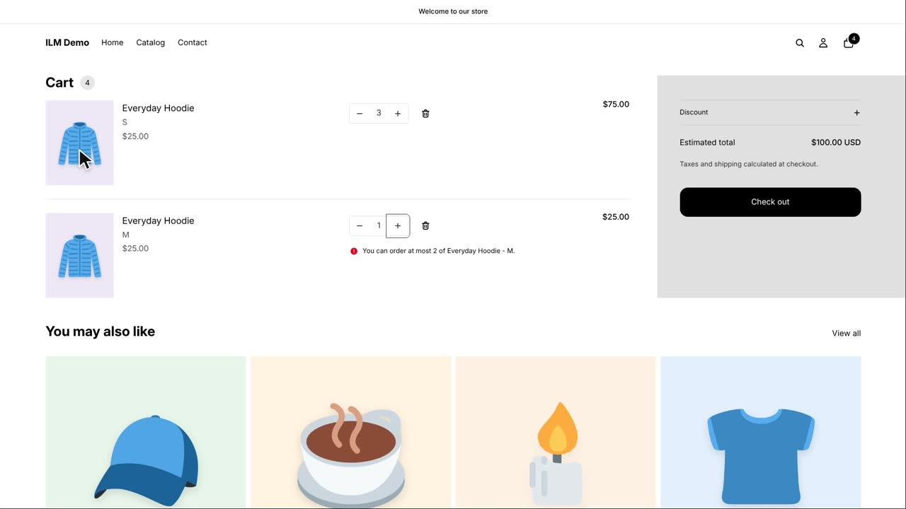

Sometimes one size or colour of a product needs its own limit, even when the rest of the product is free to sell. The ILM Min Max Order Qty/Amount app lets you set a rule on a single variant row, right under the product. Today we use the Everyday Hoodie: size M will be capped at two per order, while size S stays unlimited.
We start in the app and search for Hoodie. The Everyday Hoodie appears as a product row, and directly under it you can see its variants: S, M and L. Each variant has its own row, so you can give one size a rule without touching the others.

In the row for size M, we type two into the Max Qty field. That means a shopper can buy at most two Everyday Hoodies in size M in a single order. Size S and size L are left empty.

Now we open the storefront cart with one hoodie in size M and three in size S. The shopper changes the size M quantity to three, and Shopify refuses it, because size M allows at most two. The cart row for size M is highlighted so the shopper can see which item broke the rule.

Size S has no rule of its own, so three hoodies in size S are perfectly fine. The limit on size M does not spill over to the other variants of the same product.
